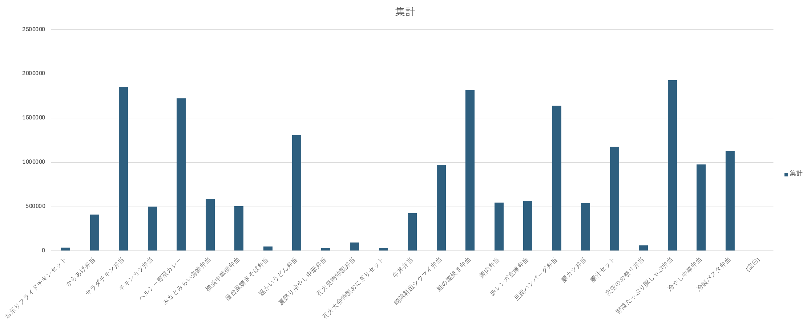
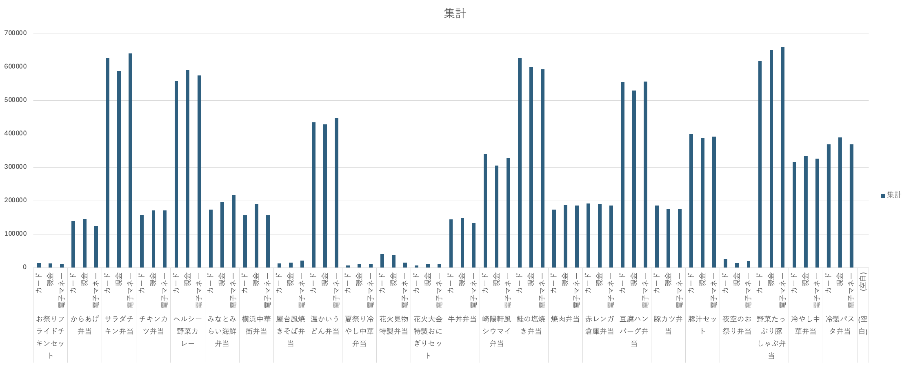

まず初めに、こんな大量のデータを扱うことが初めてだったので、びっくりしました。
作業に入り、一番興味を持った内容が、売上金額です。

ここでは種類別の売上金額を分析しました。
その結果、売上金額が一番高いのは「野菜たっぷり豚しゃぶ弁当」です。
他の人気弁当を見ればわかる通り健康的な選択肢が選ばれていました。
次にもっと細かく種類別・支払い方法別の売上金額を分析しました。
なんの支払い方法が一番売上金額が高いのか気になったからです。

その結果、売上１位と２位の弁当どちらも支払い方法別の売上金額が一番高いのは「電子マネー」でした。
このことから、購入している人は、成人しており、ちょうど健康に気を使う歳であることがわかりました。
このような簡単な分析でもいろんな事がわかるので、データ分析はとても面白いと思いました。